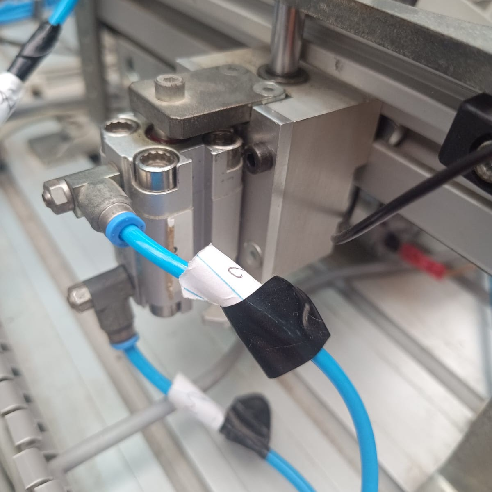
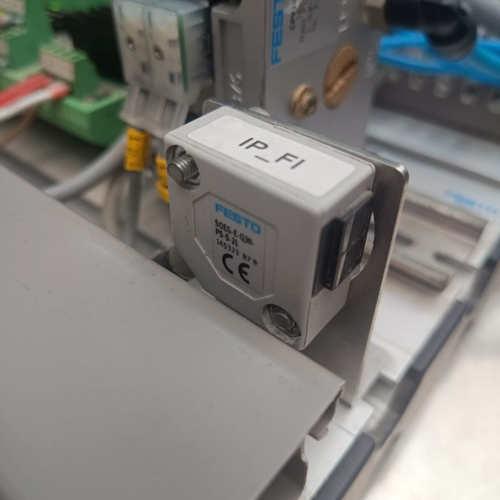
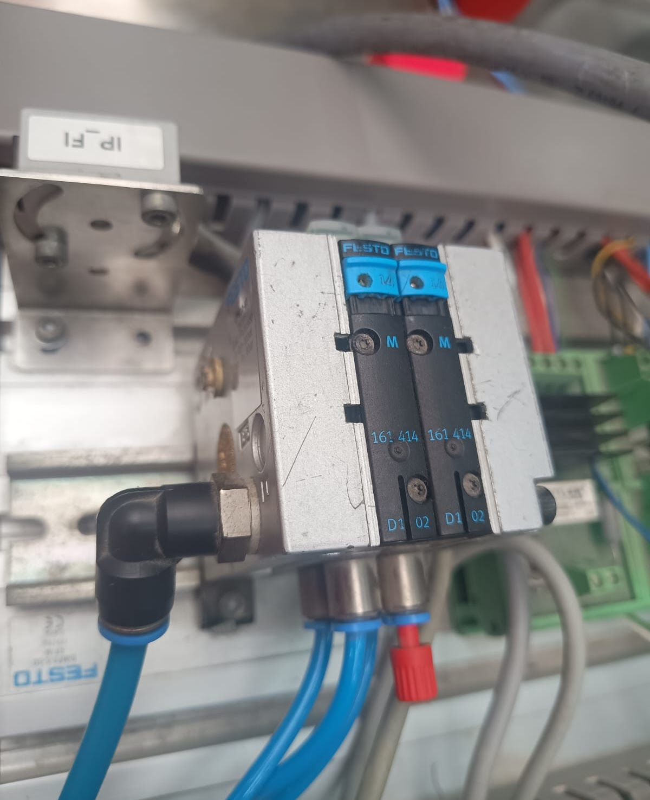
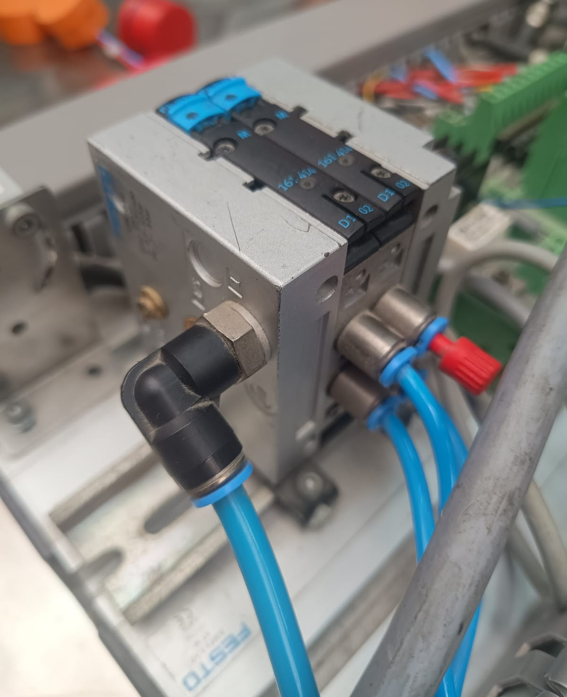
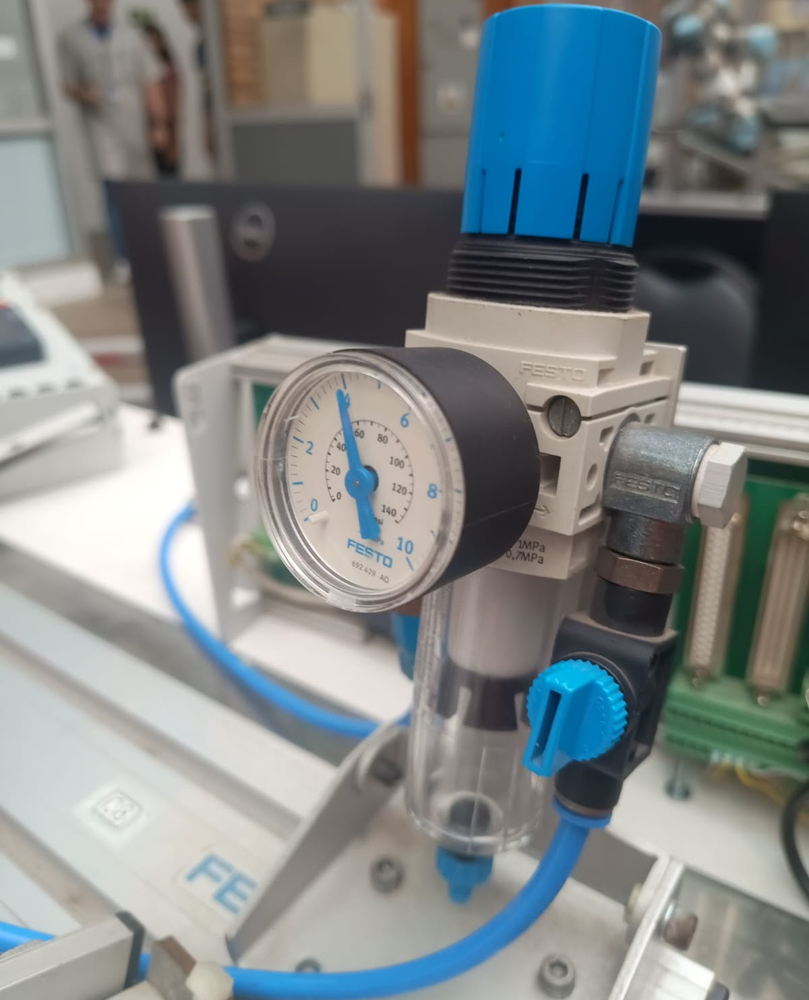
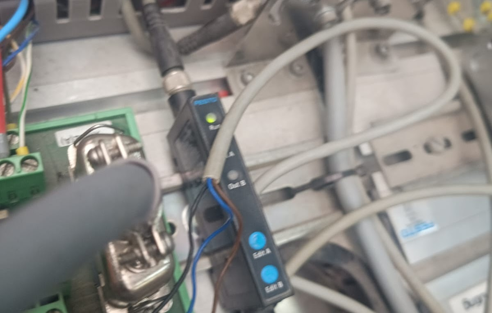
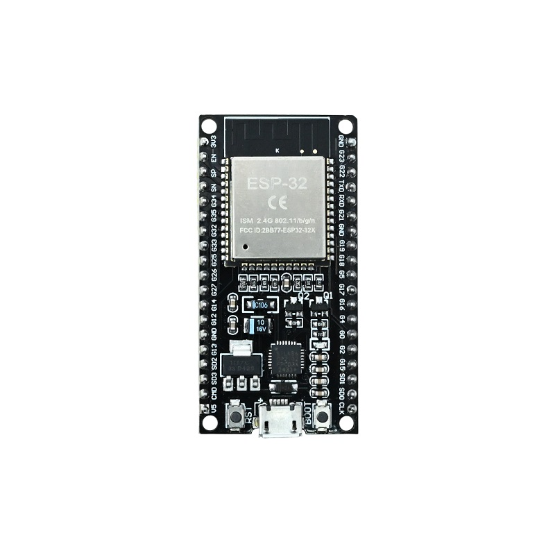
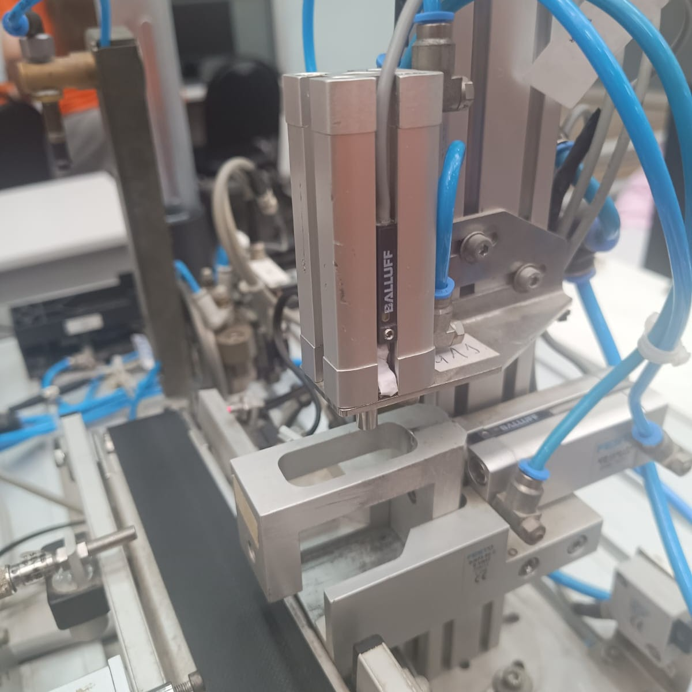

Função: Atuador responsável por converter ar comprimido em movimento linear.
Características: Modelo compacto (16 mm x 10 mm), ideal para movimentos curtos e precisos.
Aplicação com ESP32: Acionado por válvulas controladas via relé ou transistor ligado ao ESP32.

Função: Detectar presença de objetos com alta precisão.
Características: Utiliza feixe de luz, imune a interferências elétricas.
Aplicação com ESP32: Envia sinal digital para GPIO, permitindo leitura direta no código.

Função: Controlar fluxo de ar comprimido.
Características: Acionamento elétrico, retorno automático.
Aplicação com ESP32: Controlada via módulo relé ou transistor (NPN/MOSFET).

Função: Centralizar controle de múltiplos atuadores.
Características: Reduz fiação e otimiza espaço.
Aplicação com ESP32: Cada válvula pode ser acionada por uma saída digital.

Função: Regular pressão e filtrar impurezas do ar.
Características: Protege todo o sistema pneumático.
Aplicação: Essencial para garantir funcionamento estável dos atuadores.

Função: Adaptar sinais elétricos entre dispositivos.
Características: Conversão analógico/digital ou níveis de tensão.
Aplicação com ESP32: Usado para compatibilizar sensores industriais (24V → 3.3V).

Função: Microcontrolador responsável pelo controle do sistema.
Características: Wi-Fi, Bluetooth, múltiplos GPIOs, baixo custo.
Aplicação: Substitui o CLP no controle da bancada, executando lógica e automação.

Função: Movimento linear nos dois sentidos.
Características: Controle preciso de avanço e retorno.
Aplicação com ESP32: Controlado por válvula 5/2 acionada eletricamente.